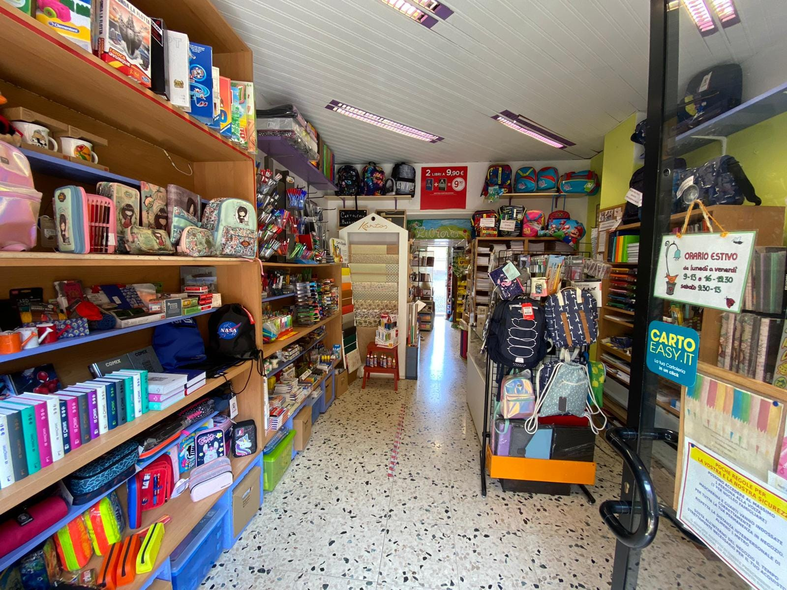
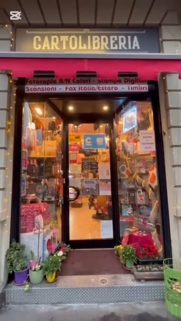

Cartolibreria Barbara · Via Rucellai 12, Precotto
Piccola, ma c'è tutto.
Lo scrivono i clienti, e gli scaffali lo confermano: penne e quaderni, zaini e libri, regali, fotocopie, stampe e timbri, in un negozio dove ci si conosce per nome. Dal 2007, a due passi dalla metro Precotto.
Lun–ven 9–19:30 · sab 10–13, 15–19

dal 2007 Pentel Premium ShopScomparto 1Cancelleria
Penne, quaderni, agende: la cancelleria di tutti i giorni.
Quello che serve a casa, in ufficio e sul banco di scuola, con i marchi che si vedono in vetrina: tintaUNITA, di cui il negozio è punto vendita, e Pentel, che ha scelto la cartolibreria come Premium Shop. Se una cosa non c'è, si ordina.
- Scritturapenne, matite, evidenziatori, correttori, pennarelli
- Cartaquaderni, blocchi, agende, diari, calendari
- Ufficiobuste, cartelline, archivio, nastri e colle
- Disegnomateriale per il disegno tecnico e artistico, Pentel Arts
Gli evidenziatori tintaUNITA La parete delle penne Il portapenne che sorride
Scomparto 2Scuola
Zaini, astucci e diari: la scuola comincia qui.
Invicta Seven Gli astucci «tutto zip» Seven, l'altro Quello che brilla Quello tie-dye
A settembre gli scaffali cambiano faccia: zaini Invicta e Seven, astucci tutto zip, diari, agende per gli studenti e per i docenti. Con la lista della scuola in mano si fa prima, e quello che manca si ordina: in un paio di giorni arriva.
- ZainiInvicta, Seven e i marchi del momento, anche con le rotelle
- Astuccitutto zip, a bustina, già pieni o da riempire
- Diari e agendeper gli studenti e l'agenda del docente
- La listaquaderni, copertine, etichette, righelli: si spunta insieme al banco
Scomparto 3Libri
L'angolo «Libreria», con la poltroncina.
C'è scritto a mano sopra gli scaffali, in verde: Libreria. Narrativa, libri di scuola e per la scuola, libri per bambini e ragazzi, anche in edizioni a didattica inclusiva. Ci si siede, si sfoglia, e se un titolo non c'è si ordina.
- Narrativale novità e i titoli che si chiedono al banco
- Scuolatesti scolastici, letture per le vacanze, i classici in edizione ragazzi
- Bambinialbi, primi libri, attività Montessori, libri bilingue
- Didattica inclusivaedizioni ad alta leggibilità per chi fa più fatica
L'angolo Libreria La scritta dipinta I miti, in edizione inclusiva Attività Montessori Bilingue, per i più piccoli
Scomparto 4Regali e idee
Un regalino, anche all'ultimo minuto.
Le borse Naj Oleari Le carte Pokémon Il Calendario Filosofico Scatole per i regali I braccialetti Filo Magico
Borse e portafogli Naj Oleari, carte Pokémon, il Calendario Filosofico, scatole, candele, braccialetti: cose carine e originali per un pensiero, soprattutto per bambini e ragazzi fino ai dodici, tredici anni. E le idee, al banco, non mancano mai.
- Per i bambinigiochi, carte, libri, astucci: il regalo per la festa
- Per la casacalendari, candele, agende, piccoli oggetti
- Per chi scrivepenne e quaderni da regalo, borse e portafogli Naj Oleari
Scomparto 5Stampa, timbri e spedizioni
Copie, stampe, scansioni, fax, timbri.
È scritto sull'insegna e lo si fa al banco: copie in bianco e nero e a colori, stampe digitali anche da un file mandato per mail, scansioni, fax per l'Italia e per l'estero, timbri e targhe. Anche l'etichetta di spedizione da stampare per il pacco da rimandare indietro.
- Copiein bianco e nero e a colori
- Stampe digitalida chiavetta o da file mandato per mail
- Scansioni e faxfax per l'Italia e per l'estero
- Timbri e targhesu ordinazione, con il testo che portate
- Etichette di spedizionestampate al momento per i resi e i pacchi
L'insegna, con la fascia dei servizi L'ingresso, Via Rucellai 12
Al bancoChi c'è
Io sono Barbara.
È così che si presenta su Instagram, ed è così che accoglie chi entra: dal 2007, in Via Rucellai, con chi lavora con lei al banco. Un negozio di proprietà di donne, che a ogni recensione risponde, in italiano e in inglese, con un grazie e uno smile.
- 107recensioni su 109 con una risposta
- 2007l'anno in cui ha aperto, in Via Rucellai
- 1066post su Instagram, quasi uno al giorno
Verso l'ingresso La vetrina Gli scaffali
Le vociQuello che scrivono
Contate una per una.
4,7su 108 recensioni Google
- 45parlano di gentilezza, disponibilità, accoglienza
- 28dicono che è fornita, che c'è tutto
- 17nominano Barbara
- 11parlano dei libri
- 7iniziano con «piccola, ma…»
- 7la chiamano il punto di riferimento del quartiere
- 7ringraziano per i consigli
- 6parlano delle idee per i regali
Parole contate nelle 108 recensioni Google che hanno un testo, il 24 settembre 2026.
«Piccola ma ben fornita e quasi sempre aperta pure sabato pomeriggio»
Da una recensione Google
Dove e quandoVia Rucellai 12
A due passi dalla metro Precotto.
In Via Bernardo Rucellai 12, tra Viale Monza e la fermata Precotto della linea rossa. Si entra, si chiede, e se non si ha tempo si telefona prima.
Cartolibreria BarbaraVia Bernardo Rucellai 12
20126 Milano
327 731 0490
- Sabato con la pausa: 10–13 e 15–19.
- Domenica chiuso.
- Se avete fretta, una telefonata prima di passare.
- Ritiro in negozio e consegna a domicilio, su richiesta.
| Lunedì | 09:00–19:30 |
|---|---|
| Martedì | 09:00–19:30 |
| Mercoledì | 09:00–19:30 |
| Giovedì | 09:00–19:30 |
| Venerdì | 09:00–19:30 |
| Sabato | 10:00–13:00 · 15:00–19:00 |
| Domenica | chiuso |

La mappa è di Google: aprendola, Google riceve il tuo indirizzo IP e può usare i suoi cookie.
Ultimo scompartoDomande
Quello che ci chiedono.
Quali sono gli orari?
Dal lunedì al venerdì dalle 9 alle 19:30, orario continuato; il sabato dalle 10 alle 13 e dalle 15 alle 19. Domenica chiuso. Se avete fretta, una telefonata prima: 327 731 0490.
Fate fotocopie e stampe?
Sì: copie in bianco e nero e a colori, stampe digitali anche da file mandato per mail, scansioni e fax per l'Italia e per l'estero. Anche l'etichetta di spedizione da stampare per un reso.
Avete i libri di scuola?
Sì: libri scolastici e narrativa, libri per bambini e ragazzi, anche edizioni a didattica inclusiva. Quello che non c'è si ordina e arriva in un paio di giorni.
Fate timbri e targhe?
Sì, timbri e targhe su ordinazione: si passa in negozio con il testo e si concorda il ritiro.
Se un articolo non c'è, lo ordinate?
Sì: quello che manca lo ordiniamo e in genere arriva in un paio di giorni.
Consegnate a domicilio?
La scheda Google indica il ritiro in negozio e la consegna a domicilio: per organizzarla basta una telefonata.